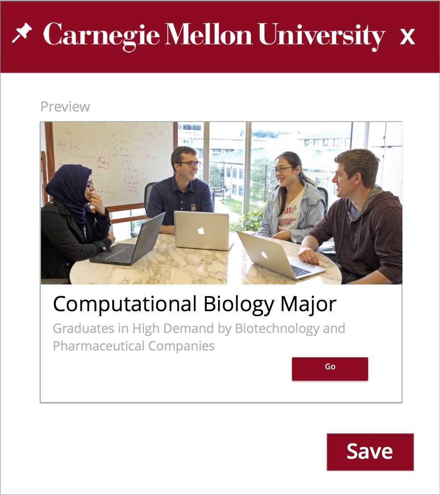

Personalized University Portal
Redesigning the Admissions Process
Project Overview
Working in teams of two, students will collect stories from fellow classmates about their experience of getting to Carnegie Mellon. This journey includes the workstudents do from the time they learn of their acceptance through the time they arrive on campus. Based on insights from the collected stories, teams will envision a preferred future and use this vision to create a new responsive website that helps incoming students transition from home to school.
The process should take the form of an Analysis-Synthesis Model.
Team: Tobi Li, Rae Lasko
Fall 2016 | 3.5 Weeks
Design Specifications
- Mobile interface should be vertical (1334x750)
- Desktop interface should be horizontal (1280 x 1024)
Observations and Framework
We began our project by engaging in directed storytelling with 4 current Carnegie Mellon Students (1 BHCI, 2 MHCI, 1 PhD in HCI) regarding their experience of getting to Carnegie Mellon.
Based on the interviews, we sketched the below customer journey map for the current state. We focused on 3 phases in this journey: pre-admission visit (interview), campus visit and pre-arrival preparation

Draft of Customer Journey Map
After integrating feedback, we iterated on the customer journey map for the current state
Current State
Imperatives and Problem Selection
Based on our customer journey map, we identified information organization and management as a key issue. Many of our interviewees found the communication from CMU to be unclear and at times overwhelming. The CMU website is organized by each department which means that incoming students often have hard time finding the desired information because they are not familiar with the internal structure of CMU. As a result they aren't clear on which department they should search for or contact. Furthermore, new students often don’t even know what information they lack, or tasks they need to do. They suffer from information overloading from the scattered information and lack of time and context based notifications.
To address this issue, we propose a personalized context-aware responsive webpage that displays information relevant to the student and their current context (time/location).
We then outlined the preferred future and drafted a hypothetical customer journey map.
Draft of Preferred Customer Journey Map
Once again we solicited feedback, and conducted more interviews to iterate on the preferred future.
Preferred Future Customer Journey Map
To illustrate the value of our proposed solution, we developed two two scenarios.
Scenario 1: Campus Visit
John is an admitted prospective student for the CMU MHCI program. He has a business trip in the Pittsburgh area so he decided to have a campus visit before the school starts.
When John arrives on campus, the mobile web app detects his location and the web app changes to “campus visit” mode. The campus map module appears at the top, and highlights locations that would be of particular interest to him, such as the University Center and Newell-Simon Hall. Another card recommends John to attend today’s seminar “Introduction to the Robotics Institute” based on his interest keywords extracted from his application. John clicks on “view details” of this event, which brings up an abstract of this seminar. He finds the seminar to be very relevant to his work, and decides to attend the seminar. After he clicks on “I’m going”, the app RSVPs the seminar for him, and displays the route to the auditorium on the campus map module.
After the seminar, John opens the web app and finds out that 2 professors and 1 current graduate student are interested in meeting with him. He schedules meetings with these people, has some very pleasant time talking to them and learning about the MHCI program, and decides to come to CMU. In our system, faculty and current students can voluntarily indicate their willingness and availability in meeting prospective students. The system can then automatically match them with the visiting prospective students based on their shared research interests.
Through personalization, our design also addresses underserved populations by providing tailored information that otherwise often buried deep in departmental websites.
Scenario 2: Preparation for arrival
Yuki is an incoming student from Japan for the CMU MHCI program. After accepting her offer, she is anxious because she doesn’t know what to do to prepare for her study at CMU. She tried exploring the CMU website but it's not very well organized and she's afraid she may have missed some important information.
When Yuki logs into her portal, she sees a personalized checklist with deadlines automatically generated for her based on the information from different departments at CMU. The app also recommends her a CMU alumni event in Tokyo and a guide on how to apply for a U.S visa as a Japanese citizen.
Based on the academic and professional backgrounds of Yuki extracted from her application, the app will also push her relevant articles on relevant research or career development opportunities from CMU.
Yuki can also “bookmark” important pages she sees on CMU website. Our app will create a module for each bookmarked page, extract the key information automatically, and update the content dynamically. This enables Yuki to use a app as a dashboard for viewing all the information that she cares about in one place.
Prototyping
Because we wanted to make the information student centric, we decided to make the information on our website as modular as possible. This would both help students quickly take in information and allow us to reorganize it in many unique ways for our equally unique students.
Lo-Fi
Wireframes for Desktop
Wireframes for Mobile
Medium-Fi
Next, we solicited feedback began iterating with higher fidelity in Sketch. In particular, we focused on finding a grid arrangement that would be the easiest to understand at a glance.
Sample Assets
In the next iteration, we added the modules of information customized to Yuki.
Because of the modular design of the webpage, the layout very naturally fit to the mobile size. Our biggest concern was how many modules to show at any one time in order to be both small enough to not make scrolling a pain, and large enough to be easily readable.
We ultimately decided to show just over one and half per a page after lots of experimenting and exporing similar layouts. The half module showing also encouraged users to scroll.
Final Assets and Solution
Key Features
The display, content and order of the modules (cards) depend on the current time, status and location of the user. For example, the first card will be a campus map if the user is on campus, and a checklist with deadlines if the user is off campus and in the pre-arrival preparation stage. Students are also able to reorder the cards if they wish.
We extract user information from the students' application to avoid having them fill out redundant forms.
We use collaborative filtering technique to deliver information on events and articles based on the users’ interests and career goals specified in their applications.
Students are able to generate their own "bookmark" modules from any CMU affiliated website.
Most importantly, the modules were designed to be quickly extensible so that modules of all topics can be generated as needed without the need for new designs. Templates can easily be provided to school administration for easy maintainence and automatic updating of the website.
Final Desktop Webpage
When a widget/card is clicked on, it expands and show details or redirects to another webpage based on the content.
Expanded Widget
To make our portal truly a “one stop” information hub for the incoming student, we also enable students to create customized widgets.
When an incoming student is browsing any CMU webpage, she can “bookmark” the page to create a card on their portal. The tool extracts key information on the page, and updates dynamically when the source web page updates.
This will enable the student to keep all the information they care in our portal and use the portal as a dashboard to keep up to date on important information.
